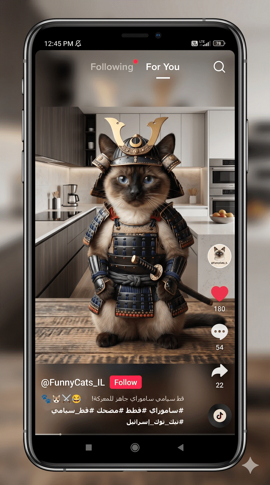
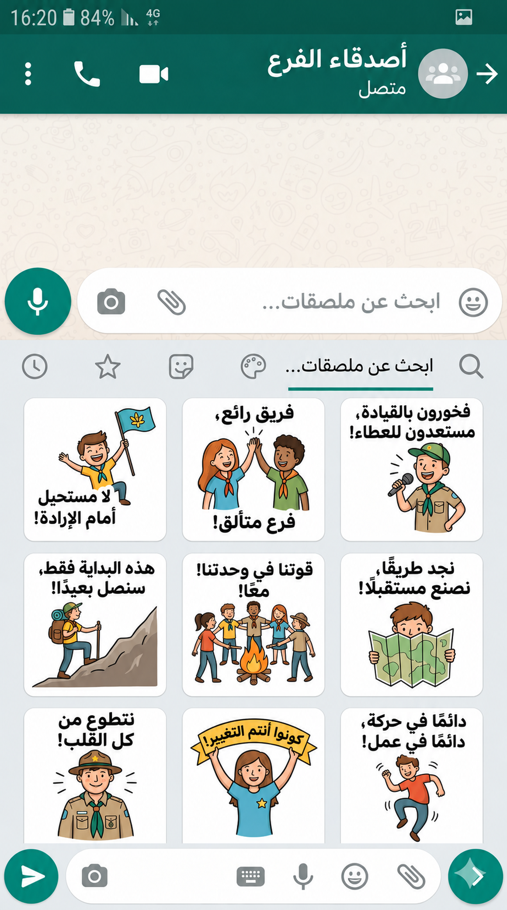
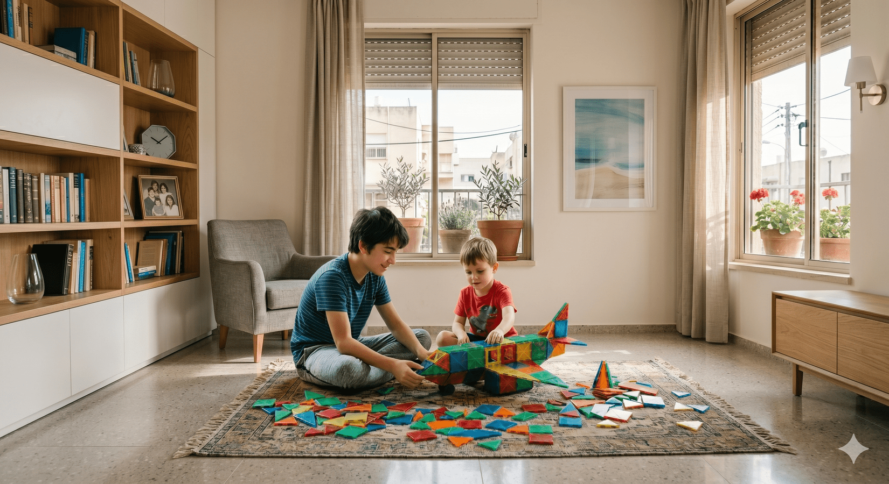
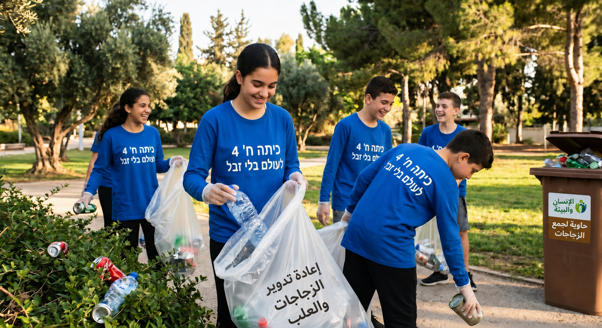
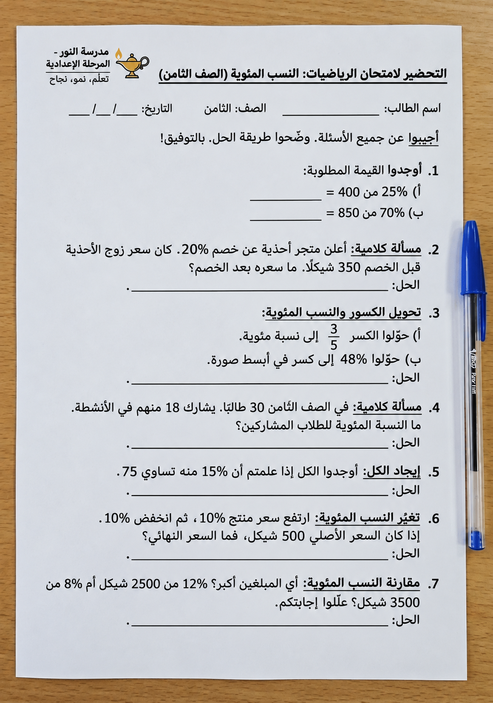
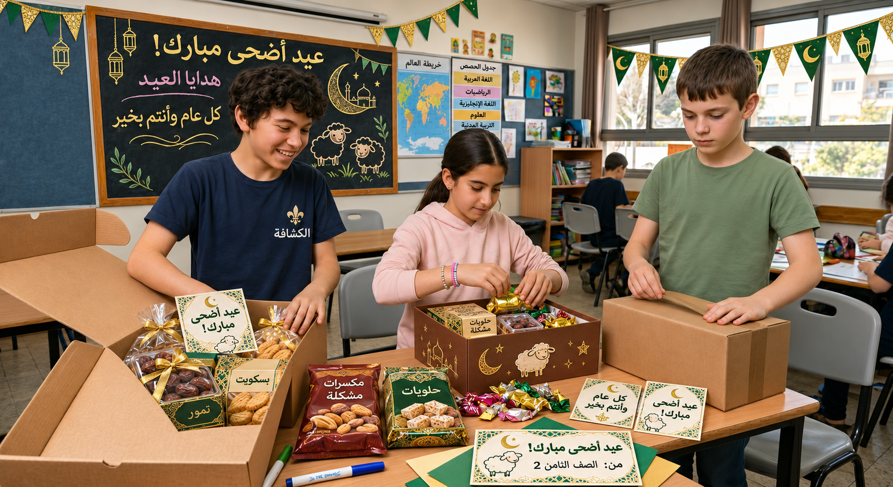

لا شيء يعزز التعلّم مثل التدريب
5 أسئلة
وهناك تلميح متاح لكم منذ البداية!
أجيبوا إجابة صحيحة عن 4 أسئلة أو أكثر كي تتقدّموا.
على كم مشاهدة حصل فيديو يوسف في المجموع؟
يوسف صانع محتوى مبتدئ.
نشر اليوم أول فيديو له عن القطط على الإنترنت.
حصل الفيديو على 180 إعجابًا بعد ساعة واحدة فقط.
تفقّد يوسف الفيديو في نهاية اليوم، فوجد أن هذا العدد يشكّل 36% بالضبط من مجموع مشاهدات الفيديو.
على كم مشاهدة حصل فيديو يوسف في المجموع؟

فما هو الكلّ؟
ما هي الكمية الجزئية من المشاهدات؟
ما هي النسبة المئوية المعطاة؟
والآن استعينوا بجدول التناسب!
كم ملصقًا يُفترض أن تُعدّ سلمى؟
تصمّم سلمى ملصقات لمجموعة الكشّافة على واتساب.
لقد صمّمت حتى الآن 42 ملصقًا بنجاح، وحسبت أن هذا العدد يشكّل 35% من عدد الملصقات التي تريد إعدادها خلال العام.
كم ملصقًا يُفترض أن تُعدّ سلمى؟

ما هي الكمية الجزئية المعطاة من الملصقات؟
ما هي النسبة المئوية المعطاة؟
والآن استعينوا بجدول التناسب!
كم مغناطيسًا يوجد في المجموع؟
يبني وليد وابن أخيه طائرة وبرج مراقبة من المغناطيسات.
استخدما 45 مغناطيسًا لبناء الطائرة،
وهذا العدد يشكّل 15% من مجموع المغناطيسات التي لديهما.
وينويان بناء برج المراقبة بالمغناطيسات الباقية.
كم مغناطيسًا يوجد في المجموع؟

ما هي الكمية الجزئية المعطاة؟
ما هي النسبة المئوية المعطاة؟
والآن استعينوا بجدول التناسب!
كم زجاجة جمعها طلاب الصف الثامن جميعًا؟
في مسابقة "يوم الأرض العالمي" جمع طلاب الصف الثامن زجاجات لإعادة تدويرها.
فاز الصف الثامن 4 بالمسابقة بعد أن جمع 120 زجاجة في يوم واحد!
وقالت المعلّمة إن هذا العدد يمثّل 30% بالضبط من مجموع الزجاجات التي جمعها طلاب الصف الثامن جميعًا.
كم زجاجة جمعها طلاب الصف الثامن جميعًا؟

ما هي الكمية المعطاة؟
ما هي النسبة المئوية المعطاة؟
والآن استعينوا بجدول التناسب!
تمرين أساسي - السؤال 2
يدرس عمر وهدى معًا استعدادًا لامتحان الرياضيات.
بعد أن حلّا 60% من التمارين في كرّاسة التحضير،
بقي عليهما 30 تمرينًا.
أ. ما النسبة المئوية للتمارين التي بقي على عمر وهدى حلّها؟
ب. كم تمرينًا يوجد في كرّاسة التحضير للامتحان؟
وجدنا أن في الكرّاسة 75 تمرينًا.
ج. تحقّقوا من إجابتكم:
احسبوا كم تمرينًا حلّ عمر وهدى، ثم أضيفوا إلى الناتج التمارين الـ 30 المتبقية.
هل نحصل على عدد التمارين الذي أعطته المعلّمة للتدريب؟

ما هو عدد التمارين المعطى؟
ما هي النسبة المئوية المعطاة؟
والآن استعينوا بجدول التناسب!
تذكّروا: لقد حلّا 60% من التمارين التي أعطتها المعلّمة.
عمل رائع!
إليكم تمرينين آخرين بمستوى صعوبة أعلى.
أ. ما النسبة المئوية للطلاب ذوي الشعر البني؟
في درس العلوم يتعلّم الطلاب عن علم الوراثة (التوارث).
رسمت المعلّمة على اللوح مخططًا دائريًا يلخّص توزيع لون شعر الطلاب في الصف:
شعر أسود – 40%
شعر أشقر – 24%
شعر أحمر – 12%
شعر بني – نسيت المعلّمة كتابة النسبة المئوية، لكنها كتبت أن مساحة الجزء البني هي: 50 سم².
أ. ما النسبة المئوية للطلاب ذوي الشعر البني؟
ب. احسبوا مساحة الدائرة كلها باستخدام جدول التناسب.
نعرف أن 24% من الطلاب شعرهم بني، وأن مساحة الجزء البني هي 50 سم².
ب. احسبوا مساحة الدائرة كلها باستخدام جدول التناسب.
ما هي المساحة المعطاة؟
ما هي النسبة المئوية المعطاة؟
والآن استعينوا بجدول التناسب!
أ. إذا حصل كل طفل أو طفلة على سلة هدايا واحدة، فكم سلة هدايا عليهم أن يجمعوا؟
في الأسبوع الذي سبق عيد الأضحى، جمع زياد وطارق وجنى سلال هدايا للأطفال الراقدين في قسم الأطفال في المستشفى.
تمكّنوا حتى الآن من جمع 40 سلة هدايا، وهذا العدد يمثّل 80% من عدد سلال الهدايا المطلوبة للأطفال الراقدين في المستشفى.
أ. إذا حصل كل طفل أو طفلة على سلة هدايا واحدة، فكم سلة هدايا عليهم أن يجمعوا؟

تمرين متقدّم - السؤال 1ج
نعرف أنّ زياد وطارق وجنى جمعوا 40 سلة هدايا، وبقي عليهم أن يجمعوا 10 سلال هدايا أخرى.
ب. ما النسبة بين عدد سلال الهدايا التي لم يتمكّنوا من جمعها بعد وعدد سلال الهدايا التي جمعوها حتى الآن؟
سؤال عن النسبة، بالتأكيد لم تتوقّعوه 😎.